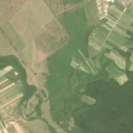
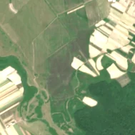

28,0 ha de pădure schimbată lângă Turulung Vii
Între vara lui 2025 și 5 mai 2026, pe aproximativ 28,0 ha de pădure din comuna Turulung, lângă Turulung Vii, județul Satu Mare, imaginile Sentinel-2 arată că vegetația a dispărut sau s-a schimbat puternic. În registrul public există o autorizație de tăiere pentru acest loc.
Autorizația de tăiere
probabil cu autorizație
Am găsit o autorizație de tăiere pentru locul ăsta, dar registrul nu ne lasă să confirmăm că acoperă exact tăierea pe care o vedem.
Ce se vede în poze: În poza «după», zona marcată a devenit gri-brun închis, spre violet, diferit de verdele din jur, fără pământ gol luminos și fără margini drepte ca la o tăiere. Aspectul seamănă cu o suprafață arsă de vegetație din luncă, nu cu o pădure tăiată.


Înainte și după: Copernicus Sentinel-2, 10 m pe pixel, conturul zonei cu portocaliu. Poza detaliată (Esri World Imagery) e de acum 1–4 ani: arată ce era acolo înainte, nu tăierea.
Pe scurt
- Identificator
- 20260505_47924_23134
- Locul
- Turulung Vii, comuna Turulung, județul Satu Mare (SIRUTA 139214)
- Coordonate (centru)
- 47.92419, 23.13417 · Google Maps · OpenStreetMap
- Suprafața
- 28,0 ha (din pixeli de 10 m; ± câțiva pixeli pe margine)
- Pădurea întreagă
- în vara lui 2025 (de atunci, nori sau iarnă)
- Prima imagine cu schimbarea
- 5 mai 2026
- Imagini în care se vede schimbarea
- 5
- Cât de sigur e semnalul din satelit
- ridicată
- Autorizația cea mai apropiată
- APV 2500146800100 · Ocolul Silvic Livada, valabilă 3 septembrie 2025 – 29 septembrie 2025, la 416 m de zonă
- Terenul
- în afara amenajamentelor silvice publicate (pășune, mal de apă sau pădure privată fără amenajament în registru)
- Arie protejată
- Râul Tur, Lunca inferioară a Turului
- Garda Forestieră
- Oradea
Dacă vrei să verifici sau să sesizezi
- Pădurile din județul Satu Mare sunt în grija Gărzii Forestiere Oradea, care controlează tăierile și dă amenzile.
- Autorizația găsită în zonă e emisă de Ocolul Silvic Livada.
- Formularul Gărzii Forestiere Naționale primește sesizări și fără nume. Trimite linkul acestei pagini, coordonatele și pozele. Dacă tăierea e în desfășurare, sună la 112.
- Autorizațiile și transporturile de lemn se pot căuta în Inspectorul Pădurii.
Pagina arată ce se vede din satelit și ce scrie în registrul public; nu e o dovadă în sine.
Cum citezi zona
Linkul acestei pagini nu se schimbă. Dacă zona iese vreodată de pe hartă, pagina rămâne, cu data și cu ce știam despre ea.
Pădurea RO, zona 20260505_47924_23134: 28,0 ha, Turulung Vii, comuna Turulung, județul Satu Mare; schimbare văzută din satelit între vara lui 2025 și 5 mai 2026. https://iliemihai.github.io/padurea-ro/zona/20260505_47924_23134/ (consultat la [data]). Date: CC BY 4.0.
Datele zonei: GeoJSON · toate zonele: date deschise · licența CC BY 4.0.
Istoricul zonei pe hartă
Starea se poate schimba când registrul publică o autorizație sau când analistul vede poze mai bune. O ținem aici, ca un link citat să arate și ce spuneam atunci.
Pe hartă cel târziu din 5 noiembrie 2026.
- 5 noiembrie 2026 – azi · probabil cu autorizație
Detalii tehnice, pentru verificare
De ce acest nivel de încredere:
- văzută schimbată în 5 imagini diferite
- peste 3 ha
- pădurea din jur e neschimbată
- ultima dată am văzut-o intactă în vara lui 2025 (de atunci, nori sau zăpadă)
- AI-ul vede pădure dispărută
Ce a văzut analistul cu context: În imaginea Sentinel-2 din 2026-05-30 zona are ton închis, cu margini neregulate, în timp ce parcelele agricole vecine sunt crem-deschis (arate sau recoltate), deci nu e o tăietură rasă clasică. Poza detaliată din 2020 arată vegetație densă dar probabil tufărișuri sau regenerare, iar coronamentul din 2000 de 2% și pășunile din jur (45%) contrazic pădurea închisă. Permisul de tăiere nu se suprapune (0%), iar zona se află în lunca râului Tur. Fără fum sau alte cicatrici în imaginea largă, încadrarea ca incendiu este nesigură; alternativa este curățarea pășunii sau schimbarea umidității solului.
- Placa Sentinel-2
- 34UFU
- NDVI de referință
- 0.82
- NBR de referință
- 0.58
- Scăderea în pădurea din jur
- 0.04
- Persistență
- 0.64
- NDVI / NBR după
- 0.561 / 0.135
- Analistul de zi (model)
- taiere · 0.8 · claude-haiku-5-5
- Analistul cu context (model)
- foc · 0.4
Cum se calculează fiecare: metodologia.
Pune harta zonei într-un articol
Copiază codul în articol (merge în majoritatea site-urilor de știri). Sau pune doar linkul: WhatsApp, Facebook și X arată singure poza zonei.